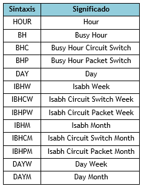

Nomenclatura y Sintaxis en Procedimientos Almacenados- SMART¶
La nomenclatura del nombre de los procedimientos almacenados es compuesta por cuatro sectores. El primer sector está compuesta por el componente Tipo de Objeto y este, identifica si el procedimiento almacenado es un Procedimiento, una Función o un Paquete. El largo de este componente es de un solo carácter y es de tipo obligatorio.
Posibles valores para el componente de Tipo de Objeto¶
El segundo sector, está compuesto por el componente Tech que hace mención a la tecnología de los datos. Lo recomendable es que no exceda los cuatro caracteres y es de tipo obligatorio.
El tercer sector es formado por tres componentes: Tipo de Tabla o Vendor, Scheme y Elemento de Red o SubScheme. El Sector no puede quedar vacío, el sector en si mismo es obligatorio y eso no quiere decir que estén presentes todos los componentes que lo componen y su estructura estará conformada por la unión de los distintos componentes.
Posibles estructuras¶
Este sector es importante porque define la clase de información que el procedimiento almacenado está manejando, una buena elección de los componentes es clave para que de un solo vistazo, sepamos qué tipo de dato es. Lo recomendable es que los componentes contengan 3 caracteres, caso contrario, no más de 4 caracteres cada uno.
Y el último sector está compuesto por dos componentes: Level Summary y Tipo de Operación o Agrupación
Posibles valores para el componente de Level Summary¶
Posibles valores para el componente de Tipo de Operación¶
Posibles valores para el componente de Agrupación¶
En su construcción existe un condicionante: Si se especifica el Level Summary, el Tipo de Operación es Obligatorio.
Posibles estructuras¶
Desde cuando comienza a funcionar? Y en lo posible desde hoy. Y lo que ya está armado, hay que cambiarlo? Y lo recomendable es que sí. Pero a veces, no es fácil.
El objetivo es tener claridad en lo que hacemos y como lo hacemos, nada de imposiciones ni de malos entendidos. Todos los comentarios, objeciones y sugerencias son bienvenidas y válidas. Cualquier duda sobre este nuevo lineamiento y su implementación, me avisan y lo vemos.